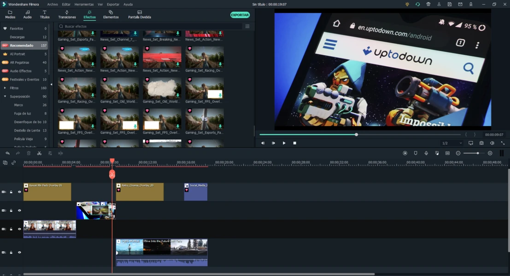

Producción de Podcast Virus
Transformamos grabaciones en bruto en experiencias visuales cautivadoras usando Filmora. Desde la corrección de color hasta los efectos especiales, cada detalle cuenta una historia.
1
Preproducción
Planificación de escenas y storyboard
2
Edición Básica
Corte y organización de tomas
3
Efectos Visuales
Transiciones, textos y gráficos animados
4
Color Grading
Estilización visual y atmósfera
Workflow en Filmora
Técnicas de Edición Implementadas
- Keyframing: Animaciones precisas y movimientos controlados
- Color Correction: Ajuste profesional de balance de blancos y exposición
- Audio Sync: Sincronización perfecta entre audio y video
- Green Screen: Técnicas de croma key para fondos dinámicos
720p
Resolución
24fps
Framerate